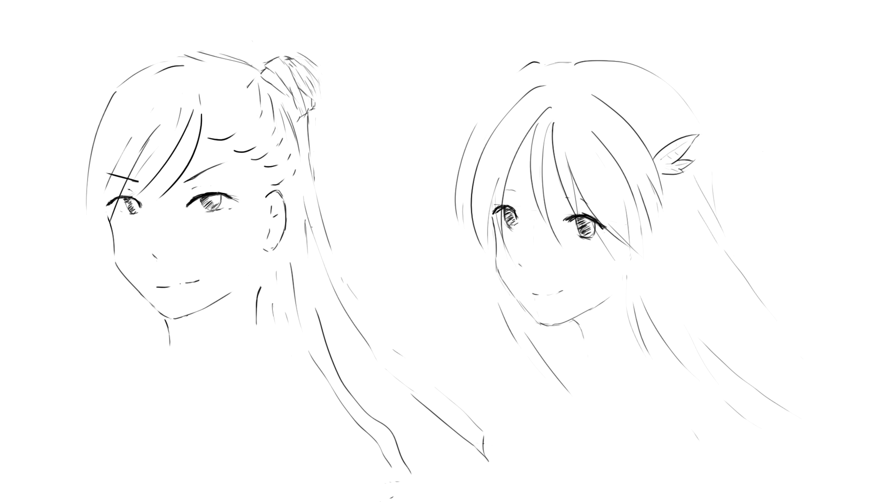

先贴上一张昨晚的作品，这样这篇博客会自动有个插图。：P

左边的男生是想象着随便画的，右边的女生其实是参考的一个插画画的，画的和原图一点都不像就是了。
之前一直在博客里面记录一下自己学习的技术技能，最近写博客的频率已经降到了一个很可怕的数值。一方面是工作的内容过于枯燥，没有什么新技术的使用，不知道要写些什么有意思的内容，另一方面就是工作确实太忙了，写一篇博客需要至少半天的时间，平时肯定是没有的，周末又要陪女票大人出去逛街。这真是现实和生活之间的巨大的矛盾啊，果然有句话是对的：成人的世界里，没有容易二字。实在伐开心。
之前，就一直比较痴迷动漫，想着有朝一日自己也能成为P站上的大触。为次也买了很多的教程和工具。但事实上，并没有因为花了钱就学到了东西，所以最重要的还是自己的不断地尝试和积累。o(╯□╰)o
so，这个版块的诞生就是为了记录一下自己的学习插画的过程，等到一年后再回首看看之前的作品，希望能真的感受到进步。当然，另一个更重要的目的是鞭笞自己，既然都把话放到博客上了，怎么着也得坚持个一年半载吧。
这个版块，我设想的内容应该主要有3个部分吧。
第一个部分，是自己的作品，因为是初学者，画的肯定很烂，这些黑历史啥的也要放上来。不断鞭笞自己，等到真有进步了，对比起来也会很开心吧。最近有个同事经常提到一个名词：延迟满足感。大致意思就是不能想要什么就得到什么，而是稍后再得到，这样能带来更大的满足感。好像挺有道理。
第二个部分，是学习到的小技巧，比如软件的使用啊，某些具体的绘画技法呀这样的。所谓温故而知新，好的东西都要记录下来，再三的翻看。说到这里，突然想到，买了半年的CSP，到现在其中的功能甚至是快捷键，我其实都没有好好掌握。真心好菜啊。
最后一部分，应该就是一个大触的作品了。P站上有一大堆，所以呢，这部分估计会记录一些大触的ID啥的吧，换句话说，就是存上大触们的地址。以后想临摹的时候，直接就能找到了。
最后，说一下我的装备吧。
首先，最简单的就是纸笔了，公司有很多A4纸，用来推公式和绘画都很好。用来无聊的时候练习一下手绘。
之后呢，我在宿舍买了一个二手的电脑，还被骗了，哭。总之是一台能用的电脑，除了有时候开不了机之外都还凑合吧。数位板买的是Wacom的影拓CTL-690中号的板子，是之前一直想买，后来在中关村正好看到专卖店，然后就顺手买了的。还附带了一个蓝牙的发射器，能够无线连接。感觉蓝牙的话，有一点点的延时，平时还是用有线连的。说实话，我到现在都没有怎么用过这个板子，对板绘很不习惯，线条都画不好。
软件使用的是CSP，全称Clip Studio Paint，国内引进了，叫优动漫，价格还行。之所以没有用Sai是因为没有MAC版。之后就是PS，这个买不起正版，希望以后有钱了能支持正版吧。
最后说一下，我现在的水平吧。真心很菜，每天就是逛逛B站看看神仙画画，淘宝上买了一些视频教程（并没有怎么看），一堆乱七八糟的书（我都想呵呵我自己），每周画画能有2次？可能吧。从昨天开始，我才能稍微适应一点数位板。对着电脑，眼还容易花，不知道是不是天天看电脑太多了。
现在就只会画头像，但实际上也只是入门级别的（可能还不到），上色？不可能的。对于动态，看了一些教程，要么是火柴人，要么是块状的组合。一点一点慢慢画，可能还能看吧。总是就是很菜很菜。
哈哈，希望我这个菜鸡能够坚持下去，祝好~